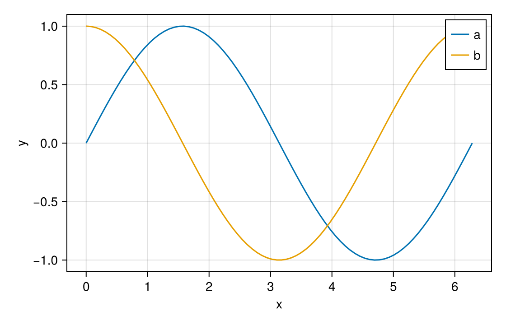

Legend
A legend already names every series in a figure, so it is a natural place to choose one. With Masque, hovering a legend entry highlights the lines or points it labels, and clicking it hands that series to your notebook. masque(fig) makes every Legend and axislegend interactive and links each entry to the plots it describes.
Notebook as text
Click a legend entry. The last cell names that series, and the line stays highlighted.
Draw two labeled lines and add axislegend, the way you already build a figure. masque links each entry to its line.
begin
xs = range(0, 2π; length = 80)
fig = Figure(size = (560, 360))
ax = Axis(fig[1, 1]; xlabel = "x", ylabel = "y")
lines!(ax, xs, sin.(xs); label = "a")
lines!(ax, xs, cos.(xs); label = "b")
axislegend(ax)
nothing
end@bind pick stores a click on a legend entry in pick. Hover highlights that line and does not change pick.
@bind pick masque(fig)
Before a click, pick is nothing. A legend click is a LegendEvent, and pick.label is that entry. A click on a line is an ElementEvent with no label. This cell reads pick, so it re-runs on the click.
if pick isa LegendEvent
"$(pick.label) selected"
else
"click a legend entry"
endclick a legend entryWhat a click returns
A click on an entry makes pick a LegendEvent. pick.label is the entry's text, pick.group is the group title in a grouped legend (nothing otherwise), and pick.targets lists the layers the entry highlights. Clicks on the plot itself still return the plot's own events, so a cell can check which kind it got:
pick isa LegendEvent ? "series $(pick.label)" : "click a legend entry"Fade the other series
The highlight is drawn over the figure; it cannot hide or dim the lines Makie drew. To fade the unselected series, draw a second figure in a cell that reads pick:
begin
focus = pick isa LegendEvent ? pick.label : nothing
fig2 = Figure(size = (560, 360))
ax2 = Axis(fig2[1, 1])
for (label, f) in (("a", sin), ("b", cos))
faded = focus !== nothing && label != focus
lines!(ax2, xs, f.(xs); label, alpha = faded ? 0.2 : 1.0)
end
fig2
endThe same pick.label can filter a table, choose which series to fit, or drive any other cell.
Which marks an entry highlights
Each entry is linked automatically to the plots Makie drew it for: the line for a lines! entry, both the points and the line for scatterlines! and stem!, and one series of a series! plot. Pass targets= to LegendInteractable when you want something else — for example, to have an entry light up a scatter as well as its line:
LegendInteractable(leg; targets = Dict("a" => :lines, "b" => [:lines_2, :scatter]))A target is a layer id, which highlights every mark in that layer, or id:k, which highlights only element k of it. targets can also be a vector with one entry per legend row, top to bottom. A label or layer that does not exist raises an ArgumentError, so a typo shows up immediately.
A legend built by hand from LineElements has nothing to link to unless you say so. Give the elements Makie's own plots= keyword, or pass targets=. An entry with no targets is still clickable; it just highlights nothing.
A tooltip for each entry
Legend entries show no tooltip by default, since the label is already on screen and a card would cover the neighbouring entries. Pass a template to add one; its fields are label, group, and targets:
LegendInteractable(leg; tooltip = masque"$(label) — $(group)")Keep a series highlighted after a rebuild
selected= on the legend layer highlights the entry's swatch. To keep the series itself highlighted when the figure is rebuilt, select the series' own layer instead — for example selected = Dict(:lines => [1]). See Selection.
A legend can also highlight series on other axes of the same figure; Linked views shows that across two panels. Keyboard focus visits the legend entries first, and highlights the series as hover does.